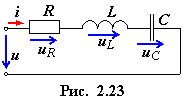
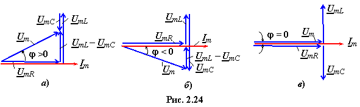

При последовательном соединении элементов R, L и C (рис. 2.23) приложенное к зажимам цепи напряжение равно сумме напряжений на элементах цепи:

После подстановки тока φ) имеем
φ) или
(2.48)
Вид векторной диаграммы напряжений и тока и характер электрических процессов, протекающих в цепи, зависят от соотношения сопротивлений XL и XC:
• при (XL XC) и UmL UmC цепь носит активно-индуктивный характер; ток i отстает от напряжения u по фазе на угол φ (рис. 2.24а);
• при (XL < XC) и UmL < UmC цепь носит активно-ёмкостный характер; ток i опережает по фазе напряжение u на угол φ(рис. 2.24б);
• при (XL = XC) и UmL = UmC цепь для источника энергии − чисто активная нагрузка; вследствие возникшего в цепи резонанса напряжений угол между входным током и напряжением φ = 0 (рис. 2.24в).
